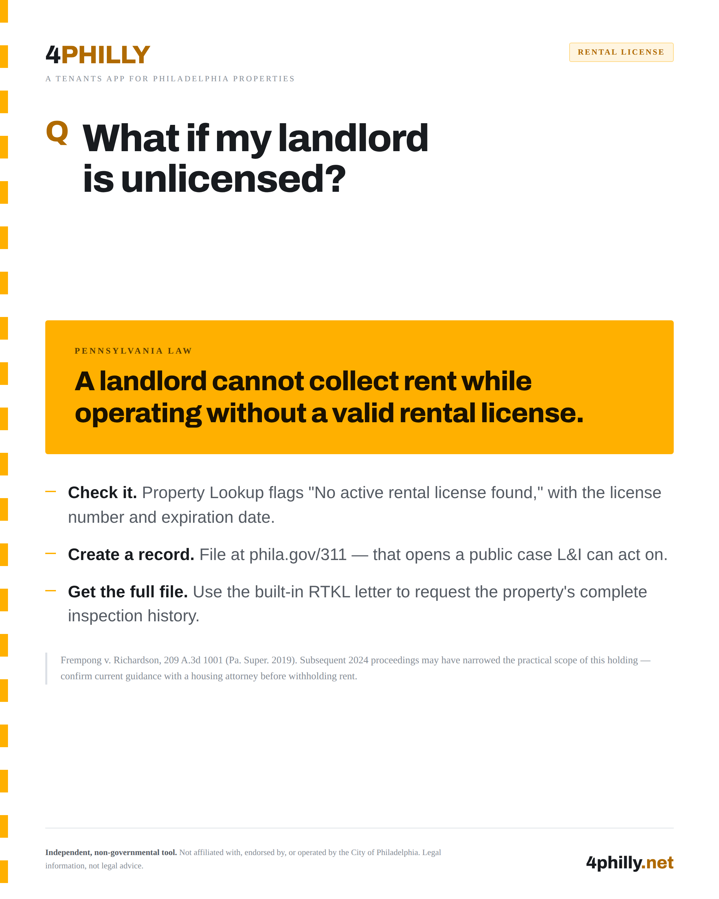
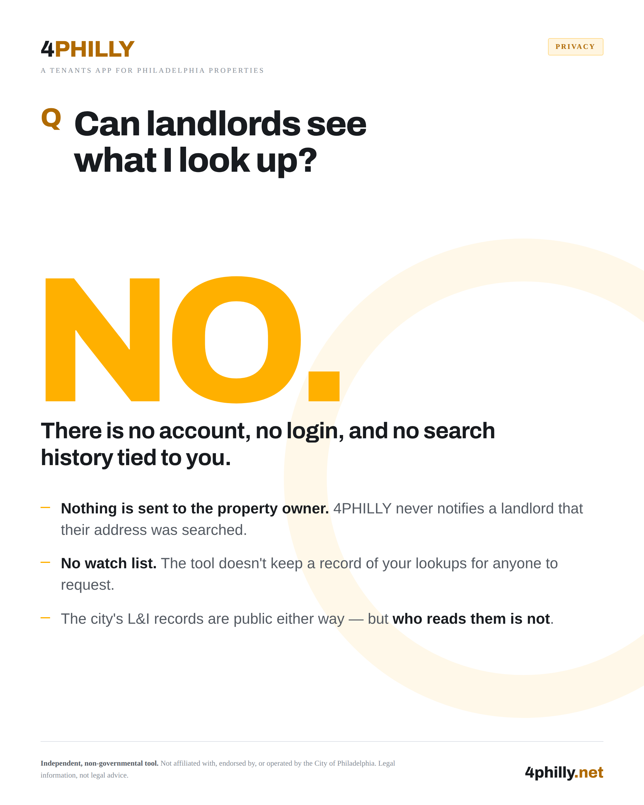
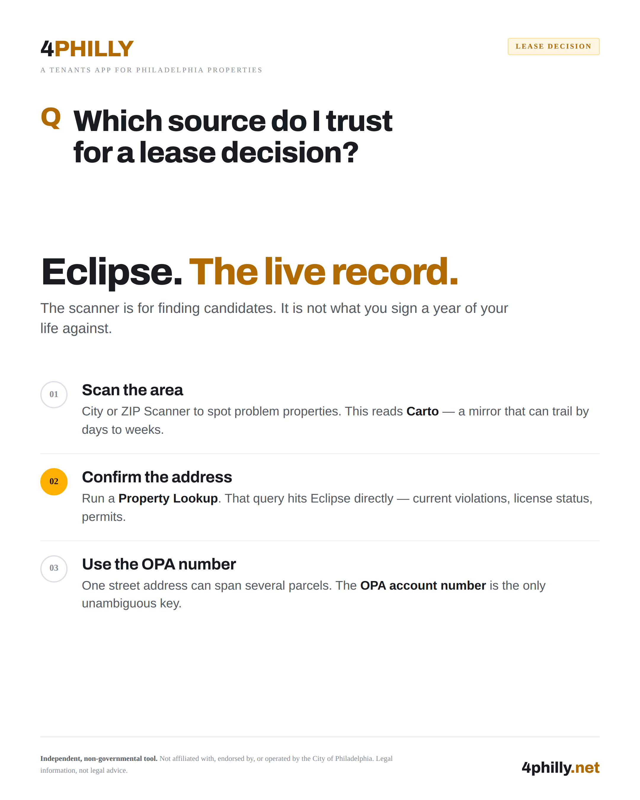
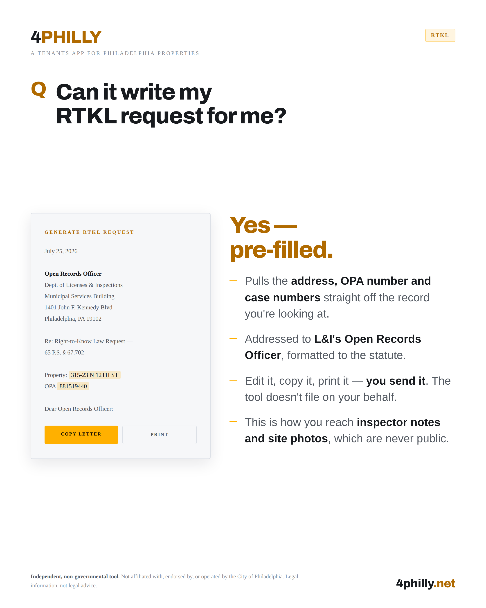

How 4philly.net turns three scattered city systems into one landlord check — no account, no login, nothing stored
Philadelphia keeps good records. L&I logs every violation. The city's open data portal tracks every rental license. Philly311 catalogs every complaint. The problem isn't that the data doesn't exist — it's that it lives in three different systems, indexed three different ways, and none of them are built for someone standing outside an apartment trying to decide whether to sign a lease.
4philly.net is a free tool built to close that gap. One address in, a real answer out.
Philadelphia's rental records are public. They just aren't easy to read.
4PHILLY is an independent tool that checks public landlord and property records before you sign a lease — pulling L&I violations, 311 complaints, and rental license status out of the city's open data and putting them on one page.
4PHILLY reads directly from Philadelphia's open data:
All of it routes through the parcel's OPA account number — so records stay tied to the exact parcel, not an ambiguous street address that might match three different buildings on the block.
Philadelphia runs L&I violations and licenses, property records, and 311 complaints as three separate systems that don't talk to each other. 4PHILLY is the join.
| System | What it's for |
|---|---|
| Property Lookup | Enter the address or OPA account number to get the OPA account, Licenses & Inspections status, and open violations |
| Atlas | Search the address for a permit or inspection history, or use a case number to check status |
| Philly311 direct | Pull the public complaint feed directly for the address |
Instead of searching Atlas for the parcel, L&I for licenses and violations, and Philly311 for the complaint history separately, 4PHILLY joins them for you — matched by the same address pattern, so nothing gets missed in translation.
It's Philadelphia's unique parcel ID. One street address can cover multiple parcels, so the address alone is ambiguous — the OPA number isn't.
Violations, licenses, permits, and certifications all run on separate city systems, so what ties those separate systems together is one thing: they're all matched by OPA number. 311 complaints are the exception — they're matched by address pattern, which can occasionally miss a match.
That's the point.
Where it stops: 4PHILLY can't certify anything. For a court or a lawyer, verified records come from L&I, and the known material is general information — not legal advice.
A landlord cannot legally collect rent while operating without a valid rental license in Philadelphia.
For the full picture — including what Phila. Code § 9-3902 says about rent collection and eviction while unlicensed — see your rights when a landlord is unlicensed and how to check a rental license.

No. By design.
There is no account, no login, and no search history tied to you. Nothing is sent to the property owner — 4PHILLY never notifies a landlord that their address was searched. There's no watch list either; the tool doesn't keep a record of who looked up what.
The city's L&I records are public either way — but who reads them isn't.

No. By design.
The public Philly311 feed shows the complaint and its timing — never who filed it. That anonymization is deliberate: it protects a tenant from retaliation for reporting, and retaliation is illegal under the PA Landlord Tenant Act, § 5720, regardless.
L&I's live, authoritative backend is li.phila.gov. Philadelphia's open data mirror is Carto — public open-data mirror, can lag days to weeks behind.
COMPLIED is currently uncontested. OPEN is unresolved as recorded. Administrative closure with no recorded compliance still shows as COMPLIED — administrative counts as compliance.
Compliance was recorded in the system.
That's not the same as an inspector physically re-visiting the address — compliance can be closed administratively, so it isn't a definitive proof the issue was actually fixed.
To verify what you found:
Treat it as triage. Not a verdict.
It's a 0–100 summary score, built from three public data points and nothing else:
Use it to sort a list of addresses fast — then confirm anything that matters with the live L&I record before you rely on it.
Research and prepare with 4PHILLY. File with certified copies from the city.
| Atlas | 4PHILLY | |
|---|---|---|
| Reads from | The free Eclipse record — licenses, inspections, violations | Scans what Carto delayed; the Eclipse read is definitive |
| Also has | Mapping, zoning, and permits beyond a property lookup | 4P Score and open permits in a click |
| Best for | Zoning research | The definitive source for a filing |
Atlas when you need the record to hold up. 4PHILLY when you need the read, fast.

Zero. No account. No login. No profile. No stored searches.
Yes — pre-filled.
This is how you reach an inspector's notes and site photos, which are never public on their own.

Eclipse. The live record.
The screener is for finding candidates. It is not what you sign a year of your life against.
Philadelphia's rental data has always been public. The gap was never access — it was that checking a landlord meant three separate city systems, three separate learning curves, and enough time that most renters just skipped it.
4philly.net closes that gap: one search, three systems, an answer before you sign.